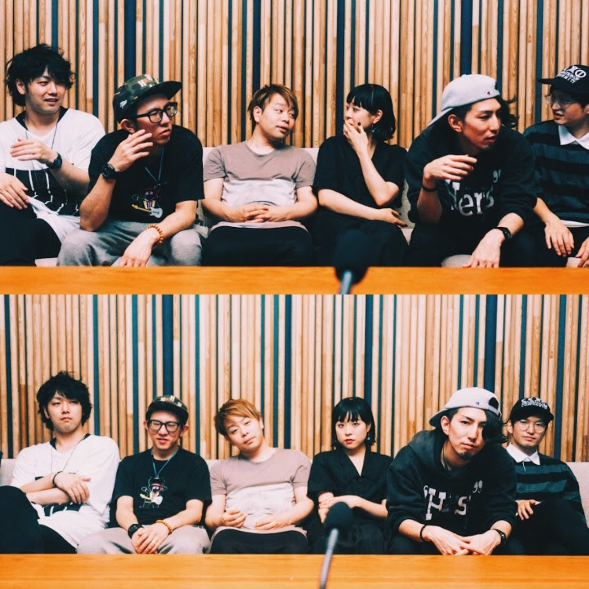

 VOCAL / Yuki Terawaki SAX / Shun Hashimoto KEYBOARD / Gotoda Ryota BASS / Shuntaro Tashiro GUITAR / Keitaro Kurosawa DRUMS / Seiya Fujimura 2017年結成、東京発女性ボーカルジャズバンド、Soigne。 ネオソウル、アシッドジャズを基調にしつつも、Yukiの現代的な感性や言葉を重視した"都市のスピリチュアルミュージック"を探求する。